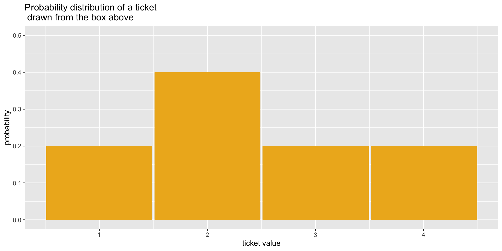

Probability Distributions
Special distributions and visualizing probabilities
Dr Andrew Mitchell ![]()
Lecturer in AI and Machine Learning for Sustainable Construction
2025-01-30
Visualizing Probability Distributions
- Heights represent probabilities
- Area of bars = probability
- Total area = 1
- Theoretical distribution
- No data collection needed

Basic Counting Rule

Example:
- 3 t-shirts
- 2 pairs of pants
- Total outfits = \(3 \cdot 2 = 6\)
General Rule:
For n steps where: - Step 1 has k₁ outcomes - Step 2 has k₂ outcomes - …and so on
Total outcomes = $k_1 k_2 k_n $
Applications:
- Drawing tickets
- Rolling dice
- Selecting committees
Special Distributions: Bernoulli
Properties:
- Binary outcomes (Success/Failure)
- One trial only
- Parameter p = P(Success)
- P(Failure) = 1 - p
Examples:
- Single coin flip
- Pass/Fail test
- Win/Lose game

Three Bernoulli distributions:
- p = 1/2 (fair coin)
- p = 3/4 (biased)
- p = 2/3 (biased)